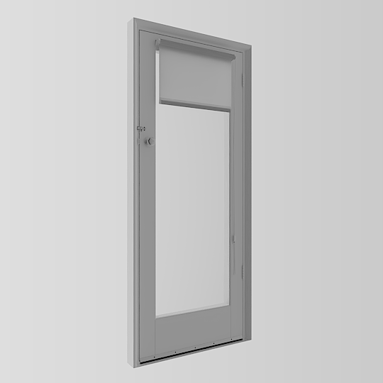

This is a wooden, white painted, hollowcore door with a structural opening of 900mm wide and 2100mm high. It has a wooden, white painted 50mm jamb which has a beveled deep reveal. The door leaf is 800mm wide by 2050mm high.
It has a shiny steel door handle hardware with a doorknob lock, as well as a barrel bolt above it.
The center of the door has glazing. Above the glazing, there is a rolled up white fabric blinds, which has a plastic bead string for control, that passes through a latch screwed into the door. The white fabric blinds are translucent.
The bottom of a door has a raised timber reveal, which is not standard, but specific to this house. The door leaf has a black rubber air seal screwed to the bottom.
The door currently only contains hardware on one side, so it is not expected to be seen from the other side.
Materials
The colours have been calibrated with Macbethcal but the specularity and roughness values are guessed.
The white fabric of the blinds are translucent and measured using a lux meter to check light transmission.
Usage
This Radiance model follows the Radiance Filesystem Hierarchy
Standard. As
such, please run make lib to build the Radiance mesh file. Once done, you can
use this in your scene by:
!xform lib/door-single-swing-left-900w-2100h/obj/model.rad
Authors
This model was created by Dion Moult.